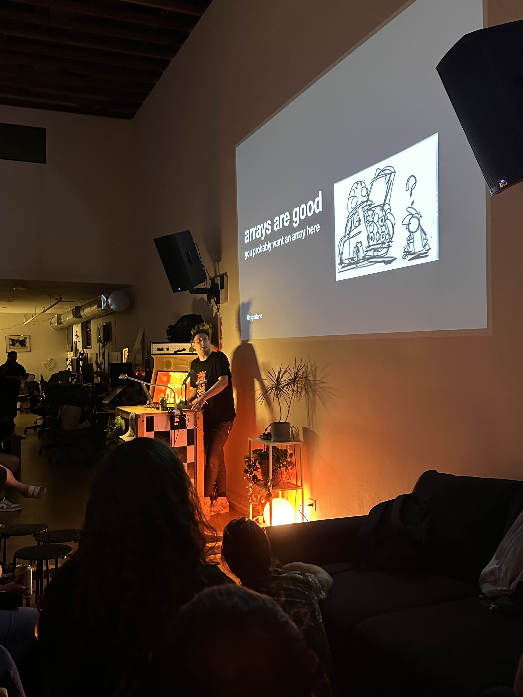

I’m Josh. I’m a programmer and game designer.

I worked in animated films for a long while: primarily on a file format called USD and pipeline’s surrounding it at Disney Animation, Pixar and Netflix. After that I spent some time in tech at NVIDIA working on Omniverse and AAA engine things at That’s No Moon.
In 2023 I founded Yoyogi Games to focus on building the kinds of games I like (video game ass video games, as opposed to games larping as movies). We released Gun Trails as our first project which was pretty well recieved.
These days im continuing to expand my custom engine I made for Gun Trails, in service of in-progress titles for both Playdate as well as PC & Console. Most posts on this blog will be technical posts derived from that work.